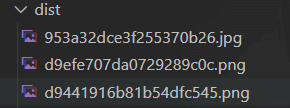
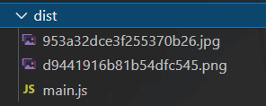
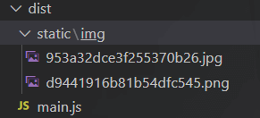
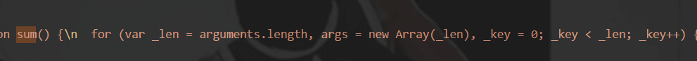

Webpack基础
Webpack基础
Webpack是静态资源打包工具
它会以一个或多个文件作为打包的入口，将我们整个项目所有文件编译成一个或多个文件输出出去
想要webpack打包资源，就要将该资源引入到入口文件中
输出的文件就是编译好的文件，就可以在浏览器中运行
在没有webpack打包过的情况下，浏览器无法识别ES6模块化import导入文件方法
Webpack基本使用
首先当然是下载webpack包和webpack-cli（它里面有webpack的一些指令）
1 | npm i webpack webpack-cli -D |
然后使用npx，npx会将node_modules中的bin目录临时添加为环境变量。再运行webpack就可以找到它了。然后告诉他你要打包的文件的目录的路径。
最后的 --mode=用来选择模式，development表示开发模式，production表示生产模式
1 | npx webpack ./src/main.js --mode=development |
打包成功之后在项目的根目录中会多一个dist目录，里面放着的就是它打包好的文件
我们在html中引入打包好的文件就可以了
1 | <body> |
在开发模式时，仅识别ES6的模块化语法，并不会编译其他语法
下面是开发模式打包好后的部分代码，
在生产模式时，它会压缩代码，并且会识别其他语法
下面是生成模式打包好后的代码
Webpack本身功能比较少，只能处理js资源，一旦遇到css等其他资源就会报错
之后会主要学习如何用webpack打包其他资源
Webpack基本配置
5大核心配置
- entry（入口）：指示Webpack从哪个文件开始打包
- output（输出）：指示Webpack打包完的文件输出到哪里去，如何命名等
- loader（加载器）：借助loader对其他资源进行解析
- plugins（插件）：扩展Webpack功能
- mode（模式）：development开发模式，production生产模式
Webpack配置文件
在项目根目录下新建一个webpack.config.js文件，按照5大核心配置来书写。
当有一些配置为空时（例如module配置，插件等），可以注释掉或者不写，不然可能会报错
1 | const path = require('path') //nodejs模块 |
当webpack.config.js配置完后，可以在控制台输入npx webpack来打包。这个时候就不需要写后面的路径。
当只有npx webpack时，它会在根目录中寻找webpack.config.js文件来打包。
1 | npx webpack |
开发模式
顾名思义就是我们开发代码时使用的模式
在这个模式下我们主要做两件事
- 编译代码，使浏览器能识别运行
开发时我们有样式资源、图片资源、css资源等，webpack默认都不能处理，我们需要配置加载器 - 代码质量检测，树立代码规范
处理样式资源
我们要打包什么资源，就需要把资源引入到打包的入口文件中
我们需要打包的css文件
1 | .box { |
这是我们的项目目录
在这里我们的打包入口是main.js文件
1 | import add from "./js/add"; |
Webpack默认是不能打包处js、json外的其他资源，所以我们需要配置loader（加载器）
而寻找loader最好的方法就是去官方文档找对应的loader。
在这里我们去官方文档找到css对应的loader，然后根据官方文档的提示进行使用
所以安装文档提示先安装依赖
1 | npm i css-loader -D |
引入相应css文件我们在上面已经完成，然后就是配置webpack.config.js。
其中use中内容的执行顺序是从下到上（从右到左）
1 | const path = require('path') |
但需要注意的是：官方文档只让我们按照css-loader，但下面webpack.config.js的use中有css-loader和style-loader两个依赖
我们需要安装这两个依赖，如果只安装了css-laoder会报错，所以我们还需要
1 | npm i style-loader -D |
安装依赖一般情况下可以按照use中有的依赖来安装
最后我们通过运行npx webpack完成打包，接下来看看浏览器能否正确显示
可以发现，style-loader将css-loader解析好的css通过创建style标签添加到html中执行
less，scass等样式的配置同理，主要在于看官方文档
处理图片资源
在Webpack5中，已经将处理图片的两个loader（file-loader，url-loader）内置了，所以我们是可以直接打包图片资源的
在css文件中我们给背景插入三种不同格式的图片
1 | .box { |
然后s使用npx webpack进行打包，下面是打包后浏览器的显示结果
在dist文件夹中会将打包的图片资源放入

在图片大小比较小时，我们一般会将他转化成base64格式的
base64格式会将图片转化为字符串，将base64格式的图片放在css中，浏览器会自动识别这张图片。
base64的优势在于变成字符串之后就不用额外发送请求，减小服务器压力。但缺点是图片内存大小会变大，且图片本来内存越大转化之后就增大更多。所以我们一般只把小图片转化成base64格式
当然了webpack默认是没有激活转base64模式的，我们需要手动配置。
1 | const path = require('path') |
配置完成之后我们再次打包，可以看到dist文件夹中只有两张图片（需要删除之前打包得到的dist文件夹，上一次打包已经存在的文件再次打包哪怕没有了也不会自动删除）

然后浏览器中第三张照片的url也变成了base64格式
具体的其他配置可以到官方文档的资源模块（asset module）中查找
修改打包输出资源路径
在前面打包完的所有资源都堆放在dist目录下，当资源一多就显得很乱，我们需要把js资源放一起，css资源放一起等
我们需要在配置中自定义输出文件名，来将某些资源发送到指定目录。
要自定义入口文件的输出路径时，直接在output的filename中修改，它自定义的只是入口文件（在这里是main.js）的输出位置
其他的资源可以在loader中配置
1 | module.exports = { |

我们发现打包之后的图片的文件名特别的长，可以通过配置[hash:10]来解决，冒号后面的数字就是你想要得到的文件名长度
自动清空上次打包的资源
我们只需要在output中添加一项clean: true就可以了
1 | output: { |
处理其他资源
我们在项目中可能有一些音视频也需要打包，当然我们需要手动配置。
我们只需要在webpack.config.js的module的test中配置相应的文件扩展名就可以
1 | module.exports = { |
处理js资源
虽然webpack本身就可以处理js资源，但功能十分有限，只能处理模块化语法。
除此之外，我们还需要对js代码格式进行规范，已经一些js的兼容性处理
针对代码格式，我们会使用ESlint来处理；针对js兼容性，我们会使用babel来处理
Eslint
Eslint就是可组装的JavaScript和jsx检测工具
我们使用eslint就是在它的配置文件中定义各种规则，来对代码进行检查
配置文件
配置文件的写法有很多种：
- 新建配置文件位于根目录下，可以使用以下几种格式，区别在于书写的格式不同
.eslintrc，.eslintrc.js，.eslintrc.json package.json中添加eslintConfig项，这种写法不需要创建文件
Eslint会自动查找和读取它们，所以只需要选其中一种格式写就可以
具体配置
以.eslintrc.js配置文件为例：
1 | module.exports = { |
parserOptions
parserOptions（解析选项）用于指示eslint检查es语法的版本
1 | parserOptions: { |
rules
"off"或0 表示关闭规则"warn"或1 表示开启规则，是警告级别的错误，不会导致程序终止"error"或2 表示开启规则，是错误级别的错误，会导致程序终止
举一个例子：例如禁止使用分号
1 | rules: { |
具体还有许多其他规则，用到是直接去官方文档寻找
extends
开发中一点点写规则如果太多的话就会很麻烦，我们可以继承已有的一些规则
- eslint官方写好的规则：
eslint:recommended - Vue Cli官方规则：
plugin:vue/essential - React Cli官方规则：
react-app
1 | extends: ["plugin:vue/essential"] |
当我们又有继承又自己写了一些规则，且我们写的规则与继承的规则又重叠，那么会使用我们自己定义的规则
使用Eslint
在webpack5中使用eslint需要安装插件，在官网搜索EslintWebpackPlugin就可以找到相应的插件
安装插件
1 | npm install eslint-webpack-plugin eslint --save-dev |
然后在webpack.config.js中导入插件，然后进行一些配置
1 | const path = require('path') |
.eslintignore
可以在根目录下配置.eslintignore文件，在它里面可以配置一些不需要接收eslint检查的文件
例如：我们现在不需要检查dist文件夹中的内容，直接在.eslintignore里写上就可以
1 | dist |
Babel
JavaScript的编译器，将es6语法编写的代码解析为向后兼容的js语法，让低版本的浏览器中也可以运行
配置文件
配置文件的写法有很多种：
- 新建配置文件位于根目录下，可以使用以下几种格式，区别在于书写的格式不同
babel.config.js，babel.config.json，.babelrc，.babelrc.js，.babelrc.json package.json中添加babael项，这种写法不需要创建文件
Babel会自动查找和读取它们，所以只需要选其中一种格式写就可以
具体配置
以babel.config.js为例来具体配置
1 | module.exports = { |
presets
简单理解就是一组babel插件，用来扩展babel功能
@babael/preset-env：一个智能预设，允许你使用最新的JS@babel/preset-typescript：一个用来编译TypeScript语法的预设
使用babel
首先当然是去下载包，在官网搜索babel-loader就能找到babel的具体配置与信息
1 | npm install -D babel-loader @babel/core @babel/preset-env |
然后将相应的配置添加到webpack.config.js中
1 | module.exports = { |
babel.config.js
1 | module.exports = { |
使用babel前
在使用babel前，webpack只能处理es6模块化语法，其他语法并没有解析。
下面是打包后的一部分代码：可以看出sum函数参数处的...运算符和箭头函数都没有被解析（在一些低版本浏览器可能会无法识别这些新语法而无法兼容）
使用babel打包之后
可以看出...语法被解析成arguments了，箭头函数也变成了普通函数

处理html资源
在这之前，我们都是手动将打包后文件引入到html中
有一些项目可能打包完成后有许多文件，且文件之间可能有依赖，那么引入顺序错误也会导致报错。
所以为了方便和准确，我们需要让webpack帮我们自动引入打包后的资源
我们可以在官网搜索HtmlWebpackPlugin来找到这个插件的详细信息
安装这个插件
1 | npm install --save-dev html-webpack-plugin |
然后在webpack.config.js中引入插件，已经在plugins中配置
1 | const path = require('path'); |
打包后的结果：
开发自动化&&开发服务器
我们每次修改完源代码要打包之后才能看到效果，这就大大增加了开发的复杂度
我们可以通过下载webpack-dev-server来实现开发自动化
安装webpack-dev-server
1 | npm i webpack-dev-server -D |
然后在webpack.config.js中进行配置
1 | const path = require('path'); |
然后使用npx webpack serve启动服务器
这样配置之后，我们只需要保存我们修改的代码，浏览器就会自动刷新。
在开发模式下，npx webpack serve只会在内存中编译打包的，在dist文件夹中并不会有任何变化。因为在开发模式下，我们只需要看到效果就可以了。
整理开发模式与生产模式
在开发模式时，我们并不需要将代码打包好。只需要通过服务器来观察效果，打包在内存中就可以了。
而生产模式就需要实际的打包了
所以我们需要为开发模式和生产模式都配置一个文件。
在项目根目录下新建config文件夹里面放着开发模式配置文件webpack.dev.js和生产模式配置文件webpack.prod.js
先来看开发模式的配置文件：在开发模式配置文件中，相对路径不需要改变（运行代码时是在根目录中运行的，所以不需要改变），而绝对路径需要回退一层目录
1 | const path = require('path'); |
配置完之后，在终端输入npx webpack serve --config ./config/webpack.dev.js。
在生产模式中我们就需要实际打包了，相应的服务器就不需要了。同样的相对路径不需要改变，绝对路径要回退一层目录
1 | const path = require('path'); |
配置完之后，在终端输入npx webpack --config ./config/webpack.prod.js。
这样配置之后要在终端敲这么多代码有点麻烦，所以我们可以在package.json中配置一下。
配置package.json中的scripts项，这样配置时npx就不需要写进配置里了，因为scripts默认在node_modules的bin目录中运行
1 | { |
这样配置之后，我们就可以使用npm run dev进行开发模式操作，npm run build进行实际的打包
提取css成单独文件
在前面我们是把css打包到js中，当js加载时，会创建style标签来生产样式
这样对于浏览器来说，可能会造成闪屏现象，用户体验不佳
所以我们要将css单独打包，然后通过link引入
我们需要下载插件来进行单独打包，具体信息可以去官网搜索MiniCssExtractPlugin
下载插件
1 | npm install --save-dev mini-css-extract-plugin |
在生产模式的配置文件中配置
1 | const path = require('path'); |
下面是打包好的结果
并且会通过link引入到html中
css压缩
官网搜索CssMinimizerWebpackPlugin就可以获取插件的具体信息
安装插件
1 | npm install css-minimizer-webpack-plugin --save-dev |
配置生产模式的配置文件，就可以完成css的压缩
1 | const path = require('path'); |